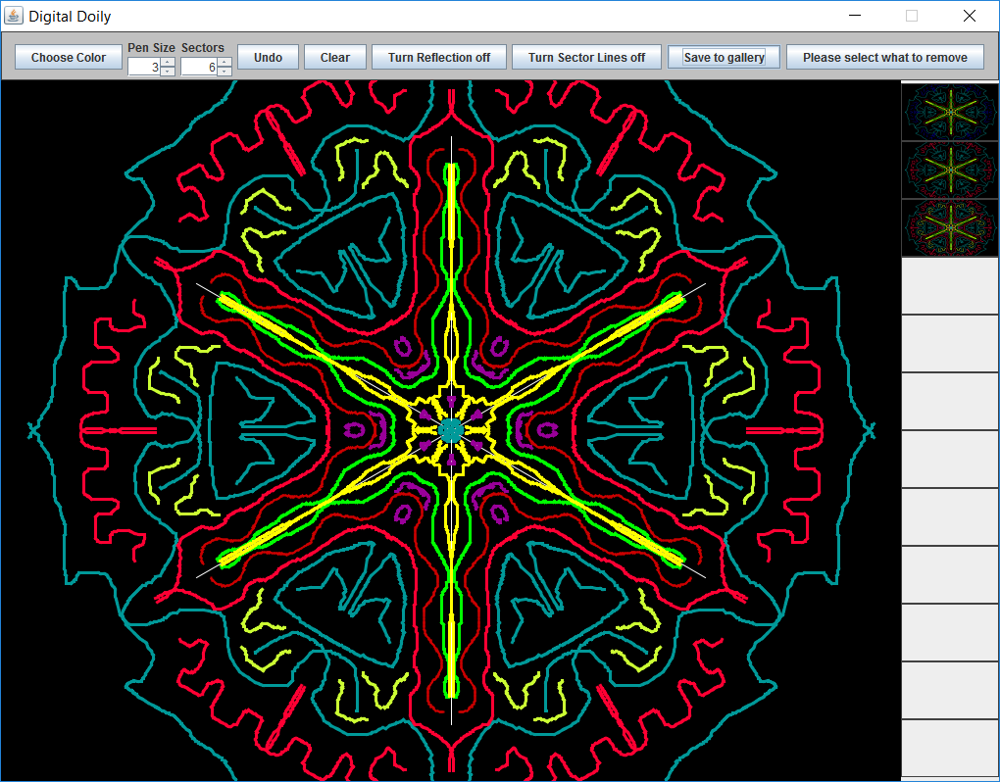

Projects
Digital Doily - This is actually my first Programming II coursework at the university. It's basically a Doily maker, with a few options to change color, size of pen, numbers of refelcted sectors and etc. It's written in Java as we're studying that. 
Physics square is my first try at making something in JavaScript and HTML5. It's kind of a physics simulation (a very simple one), where you control the red square with the arrow/WASD keys or you can drag it with the mouse, and you can change a few options like gravity, the bouncing coefficient (how much it bounces) and a few other option. There is also a WebGL link if you move the square to the left bottom corner, which is a little test with 3D animation I wanted to try. You can try it on this page, click here or in it's original page here.